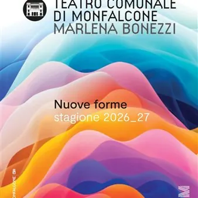

da gio 1 ott a ven 30 apr
Stagione Teatrale 2026/2027
Prende il via la nuova Stagione Teatrale del “Marlena Bonezzi” di Monfalcone! Sono quaranta appuntamenti gli appuntamenti che si dispiegano tra novembre 2026 e aprile 2027, a comporre la ricca e variegata Stagione 2026/2027 del Teatro Comunale di Monfalcone "Marlena Bonezzi"…
 Indicazioni
Indicazioni
- Costi e prenotazioni
- Costo non indicato · Prenotazione non indicata
- Programma
- Programma da verificare. Apri la fonte ufficiale per orari e possibili aggiornamenti.
- In caso di maltempo
- Nessuna indicazione specifica pubblicata.
- Note
- Acquisito automaticamente dalla fonte.
L’EVENTO
Descrizione completa
Prende il via la nuova Stagione Teatrale del “Marlena Bonezzi” di Monfalcone!
Sono quaranta appuntamenti gli appuntamenti che si dispiegano tra novembre 2026 e aprile 2027, a comporre la ricca e variegata Stagione 2026/2027 del Teatro Comunale di Monfalcone "Marlena Bonezzi", presentata in conferenza stampa venerdì 4 settembre
"Nuove Forme", questo il titolo del programma, trova riscontro in una proposta ricca e variegata, che alla prosa affianca la musica, la danza contemporanea, il teatro di figura e l'acrobatica e si articola nei cartelloni di Prosa, Musica, ControCanto, AltroPalco e Concerti per Organo.
E non è tutto: la Stagione 26/27 ha avrà un valore maggiore rispèetto alle precedenti, in quanto ha inizio in concomitanza con un imponente intervento di riqualificazione del teatro.
La Stagione si apre venerdì 13 novembre alle ore 20.45 con il primo dei sei appuntamenti previsti di ControCanto, dal titolo "The Godfather of Swing": ad esibirsi sul palco, il sassofonista e cantante britannico Ray Gelato assieme all'ensemble The Giants, in uno spettacolo di intrattenimento raffinato, energico e coinvolgente.
A partire dal 26 settembre è possibile sottoscrivere i nuovi abbonamenti, mentre da sabato 10 ottobre si possono acquistare i biglietti per tutti gli spettacoli.
Per informazioni:
Ufficio Teatro
tel. 0481 494 369
e-mail: teatro@comune.monfalcone.go.it
Per prenotazioni e acquisto biglietti:
Biglietteria del Teatro
tel. 0481 494 664
e-mail: biglietteria.teatro@comune.monfalcone.go.it
IL PROGRAMMA
Programma e orari
Appuntamenti raccolti dalle fonti elencate. Dove manca un orario, non è ancora disponibile in questa scheda.
Programma pubblicato
- Dal 2026-10-01 al 2027-04-30
INFORMAZIONI UTILI
Prima di partire
- Controllare la fonte prima di partire.
ORGANIZZAZIONE